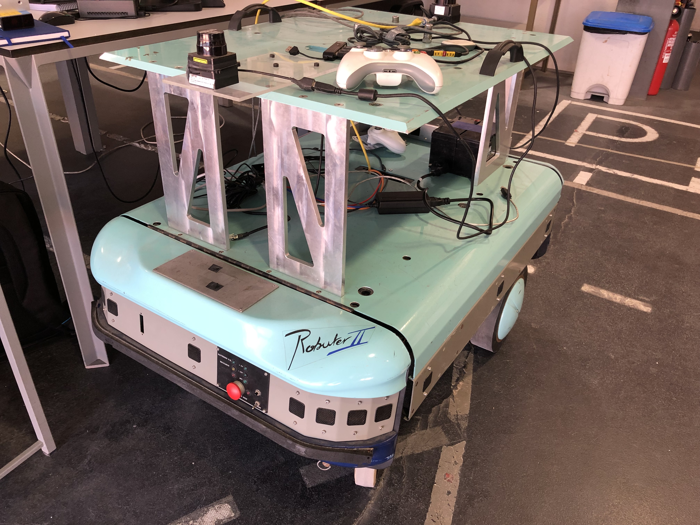
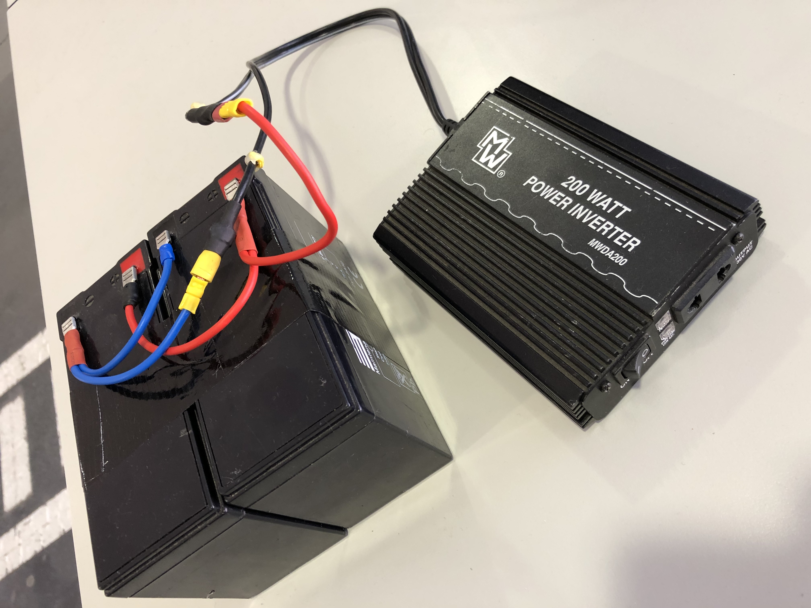

Parte desta semana foi dedicada à preparação da apresentação para o primeiro LAR Meeting, realizado a 8 de Março. Todos os membros do LAR apresentaram os temas das suas dissertações e respetivos desafios a ultrapassar ao longo do semestre.
Paralelamente à tarefa anterior, comecei a implementar as ferramentas deixadas pelo Luís Sarmento de modo a colocar a plataforma móvel funcional. Visto que a versão de ROS utilizada pelos alunos do ano passado era a Kinetic, este ano será necessário que os alunos migrem para uma nova versão, ROS Melodic.
Plataforma móvel:

Como o Luís deixou o ubuntu 16 e o ROS Kinetic no mini-pc da plataforma, iniciei a instalação nessas mesmas versões de modo a perceber se havia alguma falha/problema, antes da migração. Posteriormente, iniciei a instalação no meu computador pessoal, no qual tenho o Ubuntu 18 e ROS Melodic. Como existiu algumas alterações significativas de uma versão para outra, esta migração não foi tão fácil como esperava.
Apresento de seguida os problemas encontrados ao longo da semana:
Paralelamente necessitei de verificar se os erros/bugs encontrados com o meu PC pessoal também ocorriam no mini-PC, uma vez que este tinha a versão antiga de ROS usada pelo Luís. Uma vez que a alimentação concebida para a alimentação do mini-PC era demasiado elevado , foi necessário encontrar uma alternativa. Deste modo, utilizou-se um conversor DC-AC que necessita como input de 10-15 V e devolve 230 AC. Como o acesso às baterias do robuter estava limitado e a sua implementação poderia demorar algum tempo, utilizou-se 2 baterias (12V) externas ligadas em paralelo, como se pode ver na seguinte figura:

Após ultrapassar estes problemas, consegui colocar a plataforma em movimento com o meu computador pessoal, e tele-opera-la. Encontrei alguns bugs que necessito de resolver na próxima semana, nomeadamente o modo automático não funcional.